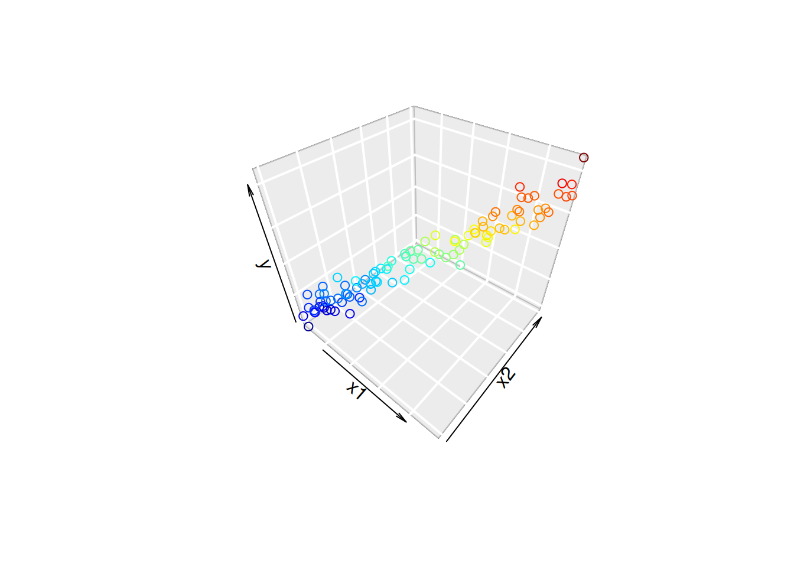
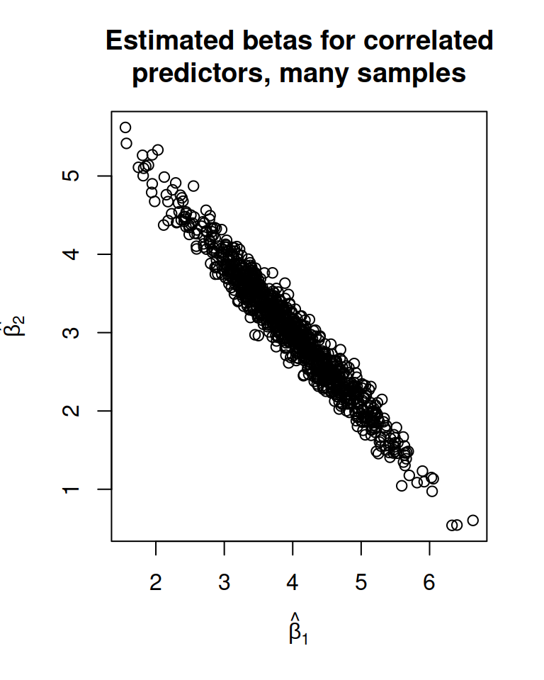

16 L17: Multicollinearity
16.1 The Problem
The Problem with Multicollinearity
- Multiple regression fits a hyperplane
- If the points form a “tube”, an infinite number of hyperplanes work.
- Rotate plane around axis of tube.
Consequences of the Problem
High cor. in \(X\) \(\implies\) high cor. in \(\hat{\underline\beta}\).
- Many combos of \(\hat{\underline\beta}\) are equally likely
- No meaningful CIs
set.seed(2112)
replicate(1000, {
y <- 0 + 4*x1 + 3*x2 + rnorm(n, 0, 5)
coef(lm(y ~ x1 + x2))[-1]
}) |>
t() |>
plot(xlab = expression(hat(beta)[1]),
ylab = expression(hat(beta[2])),
main = "Estimated betas for correlated\npredictors, many samples")
Another Formulation of the Problem
Consider the model \(y_i = \beta_0 + \beta_1x_{i1} + \beta_2x_{i2} + \epsilon_i\), where \[ x_{i1} = a + bx_{i2} + z_i \] where \(z_i\) represents some extra uncertainty.
Fitting the model, we could:
- Set \(\hat\beta_1\) to 0, let \(x_2\) model all of the variance.
- Set \(\hat\beta_2\) to 0, let \(x_1\) model all of the variance.
- Let \(x_1\) model any proportion of the variance, let \(x_2\) model the rest.
The parameter estimates are not unique.
The Source of the Problem
\[ \hat{\underline{\beta}} = (X^TX)^{-1}X^TY,\quad V(\hat{\underline{\beta}}) = (X^TX)^{-1}\sigma^2 \]
- If two columns of \(X\) are linearly dependent, then \(X^TX\) is singular.
- Constant predictor value (linearly dependent with column of 1s).
- Unit change (one column for Celcius, one for Fahrenheit).
- If two columns of \(X\) are nearly linearly dependent, then some elements of \((X^TX)^{-1}\) are humungous.
- Two proxy measure for the same thing (e.g., daily high and low temperatures).
- Nearly linear transformation (e.g., polynomial or BMI)
Detecting the Problem
The variance-covariance matrix of \(X\) can be useful: \[ Cov(X) = \begin{bmatrix} 0 & 0 & 0 & 0 & \cdots\\ 0 & V(X_1) & Cov(X_1, X_2) & Cov(X_1, X_3) & \cdots\\ 0 & Cov(X_1, X_2) & V(X_2) & Cov(X_2, X_3) & \cdots\\ 0 & Cov(X_1, X_3) & Cov(X_2, X_3) & V(X_3) & \cdots\\ \vdots & \vdots & \vdots & \vdots & \ddots \end{bmatrix} \] Why are the first column/row 0?
Plotting \(Cor(X)\)
library(palmerpenguins); library(GGally)
ggcorr(penguins)Warning in ggcorr(penguins): data in column(s) 'species', 'island', 'sex' are
not numeric and were ignoredDetecting the Problem: \(V(\hat{\underline\beta})\)
Unfortunately, the var-covar matrix is hard to get from R.
- We can look at the SE column of the summary output!
- Very very very much not conclusive.
- The Variance Inflation Factor
The Variance Inflation Factor
We can write the variance of each estimated coefficeint as: \[ V(\hat\beta_i) = VIF_i\frac{\sigma^2}{S_{ii}} \] where \(S_{ii} = \sum_{k=1}^n(x_{ki} - \bar{x_i})^2\) is the “SS” for the \(i\)th column of \(X\).
- If there is no “Variance Inflation”, then VIF = 1
- “Inflation” comes from the idea of rotating a plane around a “tube”.
- Also interpreted as a measure of linear dependence with other columns of \(X\).
Interpreting the Variance Inflation Factor
Consider a regression of \(X_i\) against all other columns of \(X\).
- The \(R^2\) measures how well the other predictors can model \(X_i\)
- Label this \(R_i^2\) to indicate it’s the \(R^2\) for \(X_i\) against other columns.
- Important: We’re not considering \(\underline y\) at all!
The VIF can be calculated as: \[ VIF_i = \frac{1}{1 - R_i^2} \]
- If \(R_i^2=0\), then \(VIF_i = 1\)
- If \(R_i^2\rightarrow 1\), then \(VIF_i \rightarrow \infty\)
16.2 Will Scaling Fix the Problem
Scaling the Predictors
If we subtract the mean and divide by the sd, some of the correlation goes away.
- This is actually kinda bad - we’ve hidden some multicollinearity from ourselves!
If \(Z\) is the standardized version of \(X\), then \[ Cor(X) = Z^TZ/(n-1) \]
If \(Z\) is the mean-centered version of \(X\), then \[ Cov(X) = Z^TZ/(n-1) \]
16.3 Fixing The Problem
One way to fix the problem
Don’t.
We can’t get good estimates of the \(\hat\beta\)s, but we can still get good predictions.
- This only works if the new values are in the same “tube” as the others.
- If the multicollinearity is real, what estimates do you expect?
- Without a controlled experiment, there isn’t a good way to estimate the effect of \(X_1\) on it’s own!
Removing predictors
If two predictors are measuring the same thing, then just include one?
- This might lose some information!
- It also might not!
- The estimated \(\beta\) won’t be meaningful.
- Inferences will be difficult.
16.4 Participation Questions
Q1
Multicollinearity can come from:
- Unit changes
- Polynomial terms
- Proxy measures
- All of the above
Q2
Multicollinearity is a problem because
- Strong correlation in \(X\) makes estimates of \(\beta\) invalid.
- Strong correlation in \(X\) means there are many values of \(\underline\beta\) that are equally probable.
- There’s no way to fix strong correlation in \(X\).
Q3
When multicollinearity is present, which of the following is still valid?
- Inferences about the effect of one of the predictors.
- Confidence intervals for a single coefficients.
- Predictions.
- Overall F test for significance of any slope parameter.
Q4
The VIF is defined as:
- The amount that the MSE increases due to the variance in \(\hat{\underline\beta}\).
- The coefficient of determination of \(X_i\) against all other predictors.
- The correlation between \(X_i\) and all other predictors.
- The \(R^2\) value for \(Y\) against \(X_i\).